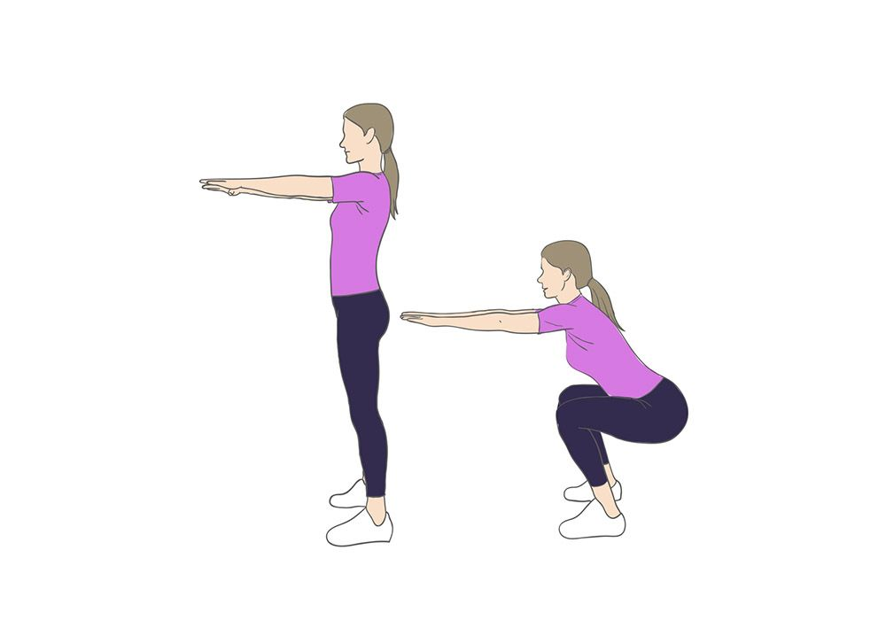
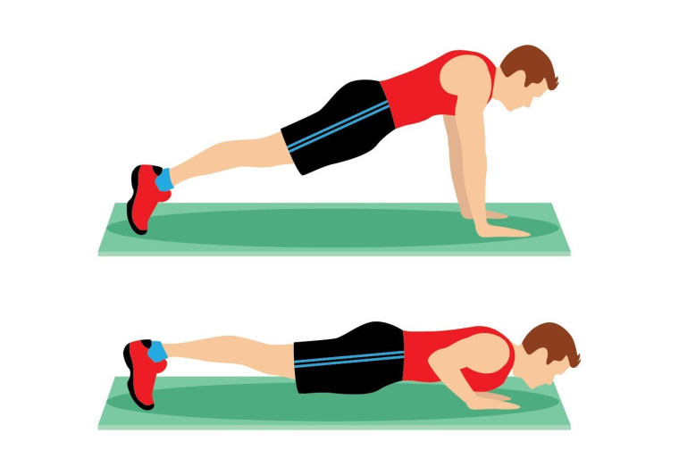
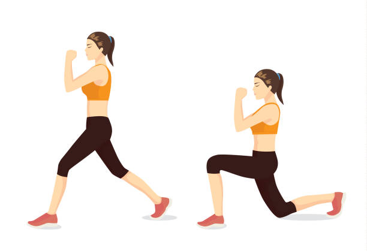
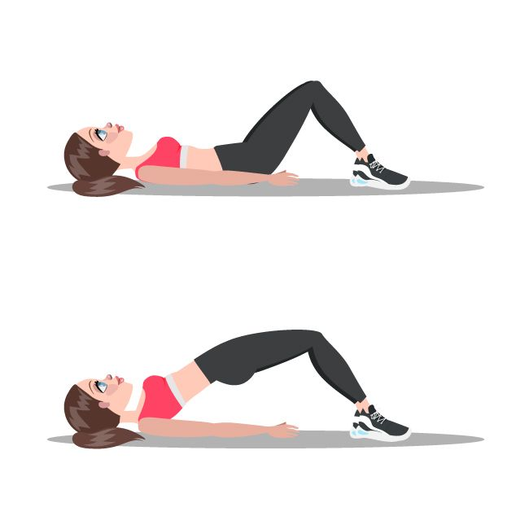
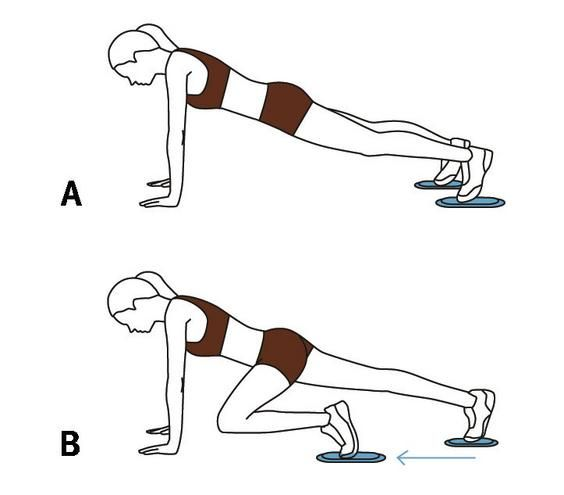

Укрепляет мышцы и держит в форме
Силовая тренировка, которая подойдет для всех
Основные преимущества силовой тренировки
1.Рост мышечной массы и развитие силы.
При регулярных тренировках с нагрузкой мышцы адаптируются, укрепляются и увеличиваются в объёме.
2.Укрепление костной ткани.
Силовые тренировки активизируют процессы формирования костей, повышают их плотность и снижают риск переломов.
3.Ускорение обмена веществ и контроль веса.
Рост мышц напрямую связан с повышением базового метаболизма. Чем больше мышечной массы в организме, тем выше энергозатраты даже в состоянии покоя.
Упражнения:
Приседания.
Отжимания.
Выпады.
Планка.
Ягодичный мостик.
«Скалолаз».
УПРАЖНЕНИЕ 1
Приседания

1.Встаньте прямо, ноги расставьте на ширине плеч или чуть шире, чтобы создать устойчивую опору.
Носки разверните на 30–45 градусов наружу — это поможет стабилизировать положение.
Спина должна быть ровной, лопатки приведены и опущены, взгляд направлен вперёд.
Руки скрепите перед собой в замок или держите вдоль тела.
2.На вдохе начните отводить таз назад, одновременно сгибая колени.
Представьте, что вы садитесь на невидимый стул позади себя.
Колени должны двигаться в одной плоскости с носками, не выходя за линию пальцев ног.
Корпус можно немного подать вперёд.
Опускайтесь до уровня, при котором бёдра становятся параллельны полу или чуть выше.
В нижней точке угол между бедром и коленом должен быть примерно 90 градусов.
Следите, чтобы спина не округлялась.
3.На выдохе, напрягая весь корпус и ноги, мощным, но не резким движением выпрямитесь. Отталкивайтесь от пяток, а не от носков. В верхней точке сильно сожмите ягодицы.
УПРАЖНЕНИЕ 2
Отжимания

1.Принять положение планки: руки чуть дальше ширины плеч, локти присогнуты. Стопы на ширине плеч, корпус ровный, мышцы кора напряжены.
2.На вдохе, плавно сгибая локти, опуститься вниз до положения, в котором угол в локтях составит 90 градусов.
3.На выдохе разогнуть локти и вернуться в стартовое положение.
УПРАЖНЕНИЕ 3
Выпады

1.Исходное положение — в широкой стойке, руки на поясе или опущены вдоль тела.
2.Сделать шаг назад одной ногой, сохраняя корпус прямым. Передняя нога должна оставаться на месте.
3.Согнуть обе ноги в коленях и опустить таз вниз, пока бедро передней ноги не станет параллельно полу. Колено передней ноги не должно выходить за носок. Колено задней ноги должно быть направлено в пол, но не касаться его.
4.Оттолкнуться пяткой передней ноги и вернуться в исходное положение.
5.Выполнить необходимое количество повторений на одну ногу, затем поменять ноги.
УПРАЖНЕНИЕ 4
Ягодичный мостик

1.Принять исходное положение: лечь на спину с упором на сведённые лопатки. Шея должна быть расслаблена, иначе можно пережать нервные окончания.
2.Согнуть колени, чтобы они образовали угол в 90 градусов — не ставить их слишком близко к тазу или слишком далеко.
3.Поставить ступни ног на ширине таза и параллельно друг другу.
4.Допускается небольшое разведение носков в сторону, если нет дискомфорта в коленном суставе.
5.Руки вытянуть вдоль тела. На выдохе поднять таз вверх, чтобы тело образовало ровную линию от колен до плеч.
6.В верхней точке сильно напрячь ягодичные мышцы, зафиксировать позу на 1–2 секунды. Спина, плечи и ступни не должны отрываться от пола.
7.Медленно опуститься в исходное положение. Не надо расслабляться, когда тело находится в нижней точке.
УПРАЖНЕНИЕ 5
Планка

1.Принять положение упора лёжа, упереться предплечьями или ладонями в пол, локти/ладони должны находиться строго под плечами.
2.Ноги поставить на носки.
3.Тело должно быть вытянуто в линию от головы до пяток.
4.Втянуть живот, напрячь пресс, будто пытаются подтянуть пупок к позвоночнику.
5.Зафиксировать положение, смотреть прямо перед собой, чтобы не перегружать шею.
6.Дышать ровно и спокойно.
7.Стараться удержать планку как можно дольше.
УПРАЖНЕНИЕ 6
«Скалолаз»

1.Корпус на протяжении всего подхода нужно держать прямо, не сутулиться, не опускать голову вниз и не запрокидывать её.
2.Руки полностью выпрямлены.
3.Подтянуть ногу коленом к одноименному локтю до лёгкого касания. Важно задействовать мышцы пресса, а не только ноги.
4.Выдох производится на приведении ноги к корпусу.
5.На вдохе вернуть ногу в исходное положение и сделать повтор второй ногой.